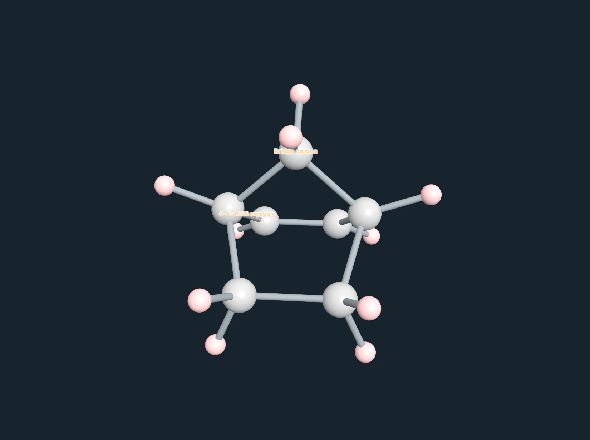

A figure should tell you which atoms were measured and keep the numbers that support it. Start with one real carbon–carbon bond, then reuse the same selection.


1. Open the example
Use the matching test build and bicyclic-c7h10.molden. This is the same calculated example used by the orbital tutorials. For this lesson you need only its geometry. Preserve the input and use new names for output files.
Choose Ball and stick. If a volume obscures the atoms, expand Fields → Quantitative field inspection and choose View meshes and analyses; hide any saved surfaces separately.
2. Measure the C–C bond
- Open Molecule → Selections and measurements.
- Enter 1, 2 in the atom-number box and choose Select atom numbers. Alternatively enable picking and click those atoms in order.
- Expand Geometry measurements, choose Distance, name it C–C bond, and choose Add measurement.
- Check a value near 1.525 Å in the table and scene monitor. Rotating/zooming must not change it.
3. Keep selection and pick order separate
Save the two atoms under Named selections as Measured bond. Then try four ordered atoms 1, 2, 7, 3 for a connected carbon-path torsion. Choose Signed torsion and add a separate monitor. Read its signed value rather than assuming a planar structure.
Use the earlier/later buttons to change pick order before creating another measurement. A saved monitor retains its own ordered inputs. Undefined geometry is reported explicitly; do not copy it as a numeric zero.
4. Make an annotated figure
- Expand Atom and residue labels, choose atom 7, and enter Bridge carbon.
- Choose a readable color and decide whether the label should respect depth or remain visible. Keep annotations sparse enough to avoid overlap.
- Frame the molecule and export a normal or transparent PNG. Open the actual image and confirm that its label/monitor is present and legible.
- Choose Export measurement CSV, then Save a new
measured-c7h10.eigenvista. - Reopen the native document and confirm the named set and monitor definitions remain. Reapply camera/palette/shader session choices separately.
5. Extend the idea to a binding-site neighborhood
With the 1AON example, expand Ligands and neighborhoods and choose a particular ADP copy using its chain/residue identity. Start at 4 Å, include complete residues, name the neighborhood and choose Show neighborhood.
Hidden source atoms are searched too. Whole residues can extend beyond the radius because one atom brought their residue into the set. This is proximity, not a hydrogen-bond or affinity assignment. Use the new named set as a later surface input.
Ask your agent instead
Use the scientific-inspection test build and the C7H10 example. Measure the distance between atoms 1 and 2, label atom 7 as the bridge carbon, and save an annotated transparent image, a measurement table and a new native document. Check the actual exported files and preserve the input.Your agent handles the connection and file operations; you do not need programming commands or manual GUI steps. Follow the installed-app connection guide first, using the matching test binary for these unreleased features.